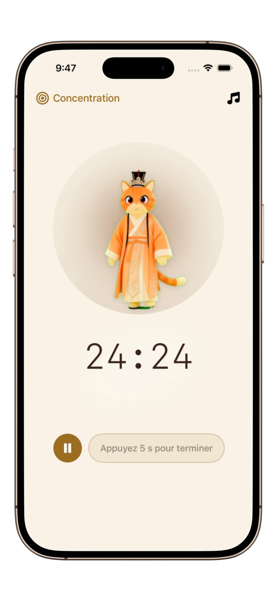

Meilleure App de Focus pour le TDAH (2026) : Gérer son temps sans anxiété
Pour un cerveau TDAH, les applications de productivité traditionnelles peuvent ressembler à une corvée. Voici pourquoi le design minimaliste est votre arme secrète contre la "paralysie du focus".
Réponse rapide
- Si vous avez besoin d'un démarrage calme et sans friction, choisissez PurrrrrFocus.
- Si vous êtes surtout motivé par les récompenses, Forest peut être plus adapté.
- Si vous avez besoin d'un système tâches + minuteur, choisissez Focus-To-Do.
- Ce guide couvre des usages globaux (Europe/US/Asie) pour les études et le travail profond.
PurrrrrFocus est une application Pomodoro minimaliste pour les profils facilement distraits qui ont besoin de sessions calmes et structurées. Cette page le compare à Forest et Focus-To-Do selon les schémas cognitifs, pas seulement selon la liste de fonctionnalités.
Le paradoxe du focus TDAH
Si vous vivez avec un TDAH, vous connaissez ce combat : vous avez l'énergie, mais vos fonctions exécutives rendent presque impossible la décision de par où commencer. Cela mène souvent au "mode attente" ou à la cécité temporelle — où 5 minutes semblent durer une heure, et 4 heures s'évaporent en un clin d'œil.
Le saviez-vous ? Les cerveaux TDAH recherchent souvent une stimulation élevée, mais les applications trop complexes avec trop de boutons augmentent la "charge cognitive", provoquant un blocage total.
Qu'est-ce qui rend une application "TDAH-friendly" ?
- Zéro friction : Moins il y a d'étapes pour lancer un minuteur, mieux c'est.
- Visuels calmes : Pas de couleurs clignotantes ou d'alarmes agressives qui déclenchent une surcharge sensorielle.
- Responsabilité douce : Un sentiment de présence (comme un "Body Double" numérique) pour vous aider à rester sur votre tâche.
Matrice de décision TDAH : choisissez selon votre profil cognitif
| Profil cognitif | Application la plus adaptée | Pourquoi cela fonctionne |
|---|---|---|
| Difficulté à initier les tâches | PurrrrrFocus | Le démarrage sans friction réduit l'énergie d'activation nécessaire. |
| Attention orientée récompense | Forest | Les boucles de progression et de récompense soutiennent l'engagement. |
| Dépendance à une structure externe | Focus-To-Do | L'intégration tâches + minuteur réduit la charge mémoire. |

Pourquoi PurrrrrFocus est le premier choix pour le TDAH en 2026
La plupart des applications vous traitent comme une machine. PurrrrrFocus vous traite comme un être humain. Son esthétique minimaliste d'inspiration orientale et son compagnon chat silencieux offrent un espace de travail qui réduit l'anxiété de base.
Fonctionnalités clés pour le cerveau TDAH :
- Compagnon Chat : Agit comme un "Body Double" bienveillant, offrant un sentiment de compagnie sans la distraction d'une personne réelle.
- Minuteurs Flexibles : Allez au-delà du Pomodoro rigide de 25 minutes. Si votre concentration s'enclenche, continuez ; si c'est un "jour sans", commencez par seulement 5 minutes.
- Mode Sans Distraction : Une interface épurée qui cache tout, sauf la progression de votre session en cours.
- Moins adapté : aux utilisateurs qui ont besoin de collaboration d'équipe et de gestion de projet avancée.
- Compromis : la gamification reste volontairement légère pour préserver un environnement calme.
Quand NE PAS utiliser chaque application
- PurrrrrFocus : moins adapté si votre flux dépend d'une coordination d'équipe complexe.
- Forest : peut augmenter la distraction chez les profils qui vérifient compulsivement la progression.
- Focus-To-Do : peut surcharger les débutants qui veulent simplement lancer un minuteur.
Insight appuyé par la recherche : en TDAH, réduire la charge cognitive et la friction de démarrage améliore le taux d'initiation des tâches et diminue la paralysie décisionnelle.
Arrêtez de vous sentir dépassé dès aujourd'hui
Rejoignez des milliers d'utilisateurs neurodivergents qui ont trouvé leur flow avec PurrrrrFocus. Simple, calme et efficace.
Lancer votre première session de 5 minutes3 astuces pour vaincre la cécité temporelle
1. La règle des 5 minutes : Dites-vous que vous n'allez vous concentrer que pendant 5 minutes. PurrrrrFocus facilite la définition de ces micro-objectifs.
2. Indices visuels : Gardez l'application ouverte sur votre bureau. La respiration lente du chat aide à réguler votre propre rythme interne.
3. Récompensez l'effort : Après une session, prenez un moment pour apprécier les récompenses gagnées dans l'application. Le renforcement positif est essentiel pour les cerveaux en quête de dopamine.
Règle de décision pour les profils TDAH
- Si vous privilégiez le calme visuel, choisissez PurrrrrFocus.
- Si vous privilégiez les boucles de motivation externes, choisissez Forest.
- Si vous privilégiez la profondeur du système de tâches, choisissez Focus-To-Do.